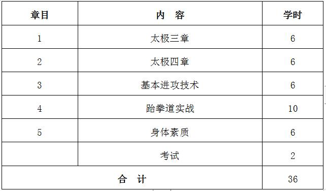
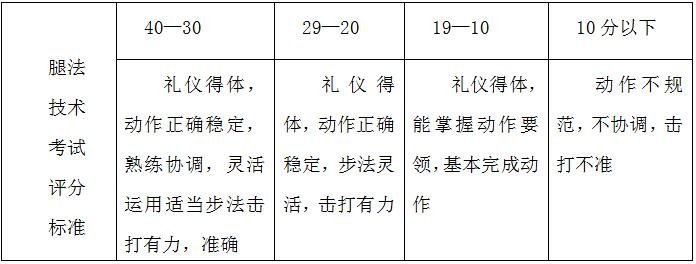
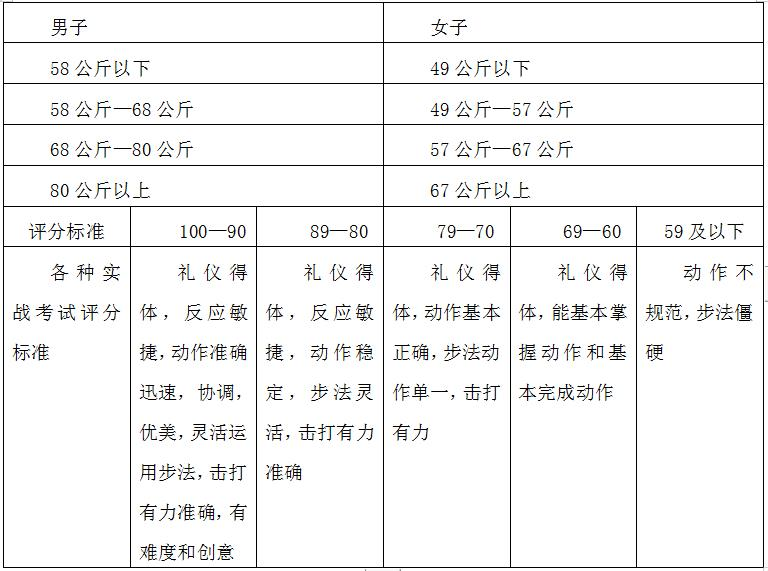

课程管理
|
课程名称 |
公共体育--跆拳道（Ⅱ） |
课程代码 |
TX031115 |
|
课程类型 |
√通识课 □学科（专业）基础课 □专业发展课 |
课程性质 |
√必修课 □选修课 |
|
开课单位 |
体育学院 |
适用专业 |
非体育专业 |
|
总学时数 |
36 |
周学时数 |
2 |
|
课程学分 |
1 |
编 写 人 |
张 路 |
|
编写时间 |
2017.07.20 |
审 批 人 |
刘其龙 |
一、教学目的
本课程以跆拳道品势套路（太极一章、太极二章）为主要锻炼形式，兼顾全面的身体素质练习，以提高学生的健康水平， 掌握锻炼方法和技能，为终身体育打好基础。本课程教学目的为：
1.使学生了解跆拳道运动的基本常识和规律，能够运用跆拳道这一运动形式进行自我身体锻炼并逐步提高， 学会欣赏高水平跆拳道比赛。
2.熟练掌握跆拳道基本功、太极一章、太极二章技术动作，能够做到动作准确规范， 体现出跆拳道品势的风格特点。
3.通过教学使学生具有克服困难战胜对手的勇气和信心，培养学生勇敢、顽强、 坚忍不拔的意志品质和乐观进取、勇于竞争的精神，树立良好的道德风尚。
4.全面发展和提高各项身体素质，改善身体机能， 为今后运动能力和生活质量的提高打下基础。
二、重点与难点
（一）重点：跆拳道的品势太极三、四章和腿法技术。
（二）难点：跆拳道腿法应用：双飞踢。
三、基本内容与要求
第1章 感悟跆拳道的品势
1.1 太极三章
1.2 太极四章
（一）教学目的：跆拳道品势，是跆拳道爱好者学习跆拳道基本攻防技术前应该掌握的基础性套路，也是跆拳道晋级升段考评时必须考试的内容之一。 所以，每一名跆拳道爱好者必须学好、练好品势套路。
（二）重点与难点：中段冲拳和前踢。
（三）基本内容：准备姿势；技术动作；收势。
第2章 跆拳道的风采
2.1 基本进攻技术
2.2 基本防守技术
（一）教学目的：跆拳道训练以赤手空拳进行训练，在训练中培养毅力和爆发力，训练参与者运用拳脚技术在适当的环境中保护自己。跆拳道竞技技术以腿法为主，拳法为辅。 学习掌握跆拳道基本竞技技术，是练好跆拳道的最重要环节。
（二）重点与难点：横踢和旋风踢。
（三）基本内容：拳攻；推踢；前踢；横踢；下劈；上段防守；中段防守；下段防守。
第3章 跆拳道专项身体素质和技术的练习方法
3.1 专项身体素质练习方法
3.2 专项技术练习方法
（一）教学目的：本章重点介绍学习跆拳道所需要的专项身体素质的练习方法，介绍跆拳道专项技术练习通常采用的方法， 及练习中应该注意的事项。
（二）重点与难点：跆拳道专项技术的脚靶练习方法和跆拳道速度素质的训练方法。
（三）基本内容：跆拳道的力量素质练习方法；跆拳道的柔韧素质训练方法；跆拳道速度素质的训练方法；跆拳道耐力素质的练习方法；跆拳道灵敏、协调素质的练习方法；跆拳道的功力训练；自我练习法；配合练习法；增加难度练习法；利用外界条件和环境的练习方法； 踢打沙袋练习法；有条件实战练习法；实战练习法；跆拳道专项技术的脚靶练习法；自学跆拳道的方法。
第4章 跆拳道的实战技法
4.1 跆拳道实战的基本姿势
4.2 跆拳道实战的组合技法
（一）教学目的：通过本章的学习，让学生学好练好实战技法，在此基础上，根据学生的基础和特点，结合跆拳道实战的规律和特点，有创造性地创编和发展跆拳道实战的组合技法， 不断提高自己的实战能力，使自己早日成为跆拳道实战的高手。
（二）重点与难点：跆拳道主动进攻组合技法和攻防反击接反反击组合技法。
（三）基本内容：开式实战姿势；闭式实战姿势； 主动进攻组合技法；防守反击组合技法；攻防反击接反反击组合技法。
第5章 身体素质——中长跑
5.1 起跑和起跑后的加速
5.2 途中跑、终点跑
5.3 中长跑的呼吸
5.4 全程跑：1000米（男生）、800米（女生）
（一）教学目的：通过教学使学生掌握起跑和起跑后的加速、途中跑、终点跑等中长跑的基本技术，学会正确的呼吸方式，发展耐力素质，进一步增强心肺功能。
（二）重点与难点：途中跑技术；中长跑的呼吸。
（三）基本内容：起跑和起跑后的加速、途中跑、终点跑等基本技术；全程跑。
四、授课内容学时分配
五、成绩考核：
（一）考核方式：现场测试。
根据教学目的和要求，本课程的考核在学期末进行，考核内容结合本学期教学内容进行。综合成绩＝平时成绩×30%＋考试成绩×70%，其中平时成绩根据考勤、课堂表现进行评分，考试成绩＝技能考核成绩×70%＋身体素质成绩×30%。 身体素质为每学期的必考项目，考试内容为女子800米。
（二）考试内容：太极三章、太极四章、腿法考试、模拟实战。
（三）评分标准：
1.太极三章、太极四章（30分）
评分标准：方法正确、力量顺达、力点准确、应用自如，给予满分。 轻微不符者，扣1-5分，显著不符者，扣6-10分，严重不符者，扣11-15分。
2.腿法考试（40分）
表1 腿法考试评分标准
3.实战考试（30分）
考试方法：按级别随机抽签两人一组进行条件实战考试学生必须穿戴整齐方可进场， （男子考试时间3分钟，女子考试时间2分钟），评分标准如表2，
表2 实战评分标准
4.身体素质（女子800米）：评分标准见表3。
六、教材与参考书目
（一）使用教材：
[1] 高谊、张惠欣，《普通高校跆拳道课程教材》，南开大学出版社，2011年1月。
（二）参考书目：
[1] 刘卫军，《跆拳道》，北京体育大学出版社，2012年8月。
[2] 黄鹤，《跆拳道品势教程》，北京体育大学出版社，2011年1月。
[3] 李万友，《现代跆拳道实用教程》，北京理工大学出版社，2013年11月。
[4] 曾于久，《竞技跆拳道训练》，人民体育出版社，2014年2月。
表1 身体素质考核评分标准

注：数据来源于国家学生体质健康标准（2014年修订）。